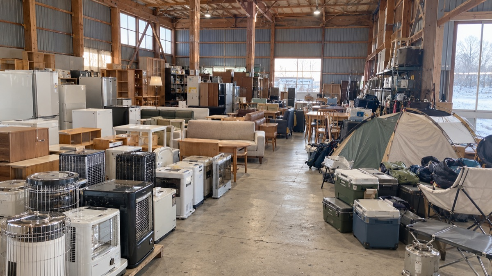

写真は想定イメージ（生成・SAMPLE）。実際の倉庫・店舗の写真ではありません。
WINTER PREP 冬支度
冬支度の棚
ストーブ、除雪、冬用タイヤ。雪が降る前に見ておきたい品です。
冬・除雪をすべて見るAISLE INDEX
カテゴリから探す
CONDITION 状態のみかた
基準は仮です（ECOLで確認中）。家電の動作確認は、ランクとは別に商品ごとに表示します。
PICK-UP & DELIVERY
受け取り方
-
店頭で受け取る
LINEか電話で取り置きを相談し、店頭でお渡しする流れを想定しています。店頭販売の有無・受取条件は要確認
-
近隣へ配送
釧路市・釧路町など、現買取サイトの出張買取エリアを仮に置いています。配送の可否・エリア・料金は要確認
-
大きな品は相談
冷蔵庫・ソファ・食器棚など。サイズ・階数・お住まいをLINEで伝えてください。料金・家電リサイクル品の引き取りは要確認
STORE
店舗情報
現買取サイト掲載情報
リサイクルショップ
ECOL（エコル）
- 所在地
- 〒085-0048 釧路市駒場町3-5-1
地図で見る - 営業時間
- AM9:00〜PM5:00・日曜休
買取の受付時間です。販売の営業時間は要確認 - 運営
- 合同会社ECOL
- 駐車場
- 未確定
LINE / TEL
気になる品は、LINEで相談・取り置き。
- 商品名か、商品ページの画面を送る
- 状態や受け取り方を相談する
- 店頭でお渡し（流れは仮）
SELL TO ECOL
売りたい方はこちら
不用品の買取・出張査定は、既存の買取サイトで受け付けています。